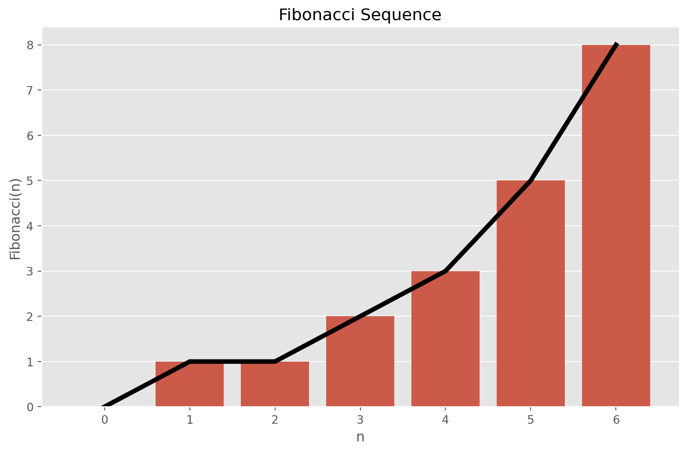
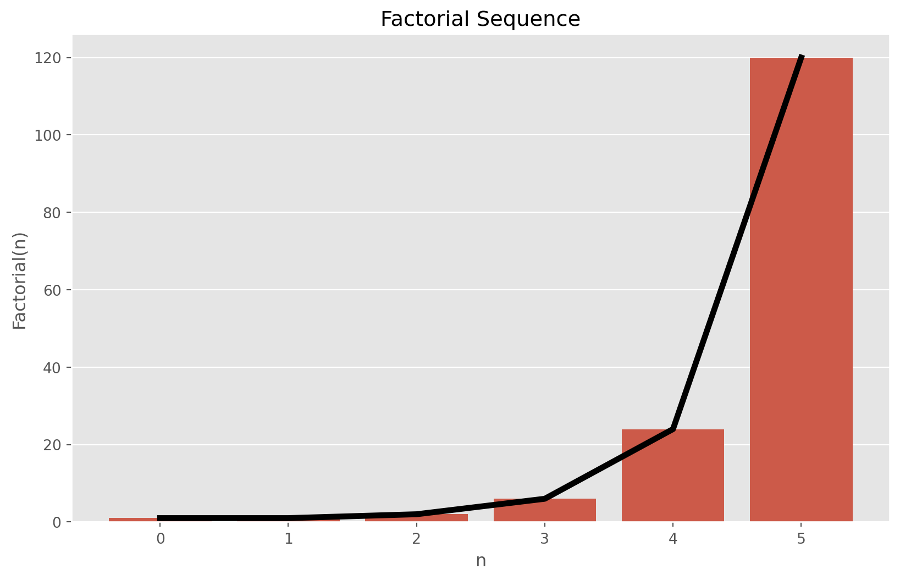
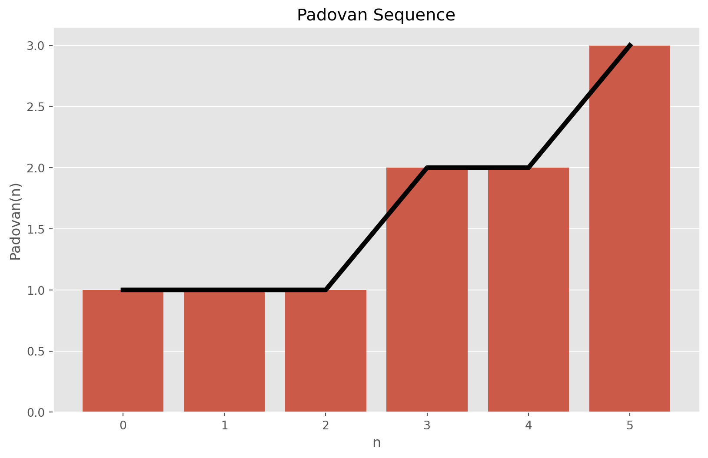
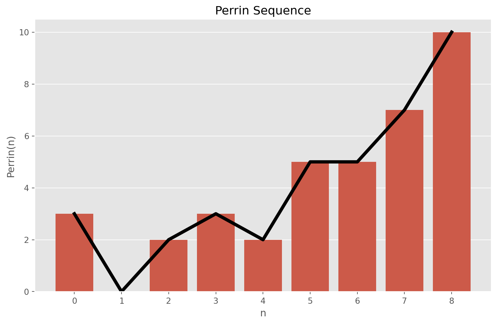
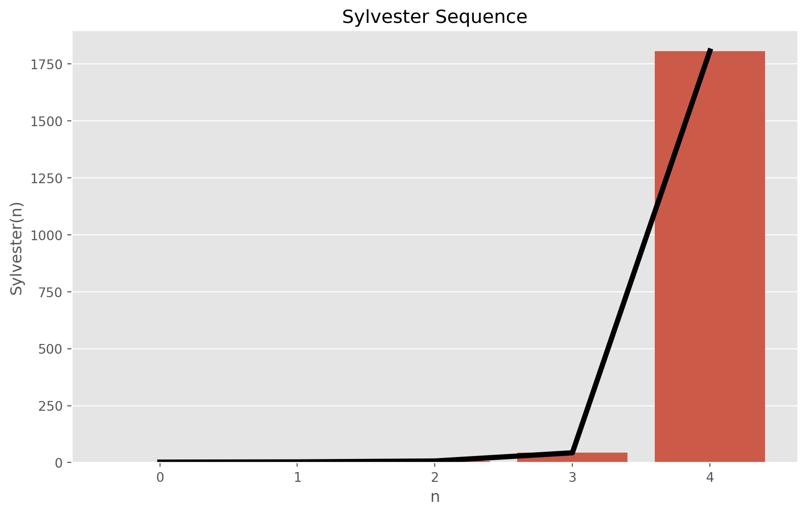
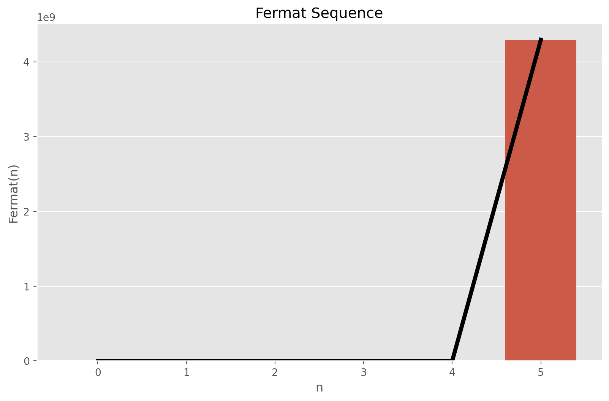

from matplotlib import pyplot as plt
import seaborn as sns
plt.style.use("ggplot")Introduction
In this article, I want to review some integer sequences from number theory. Particularly, I will review their mathematical formulation, then will write Python functions for them and later on generate sequences to visualize them.
In short, integer sequence is an ordered list of integers. Generally, in mathematics, the sequence is a collection of objects, where repetition is allowed, and object order does not matter. The number of objects a.k.a elements is the length of the sequence. The sequence can be finite or infinite, increasing or decreasing, convergent or divergent, bounded or unbounded.
A sequence generally has a rule, which indicates how we can find the value of each element. An integer sequence can be declared either by the formula for its \(n^{th}\) element, or by giving the relationship between its elements. Moreover, sequences have the initial condition, which gives us the value of the first few terms of the sequence.
def plot_sequence(sequence, x_range, title, x_label, y_label):
"""
Plot a sequence of integers.
Args:
sequence: Sequence of integers.
title: Title of the plot.
x_label: Label of the x-axis.
y_label: Label of the y-axis.
"""
plt.figure(figsize=(10, 6))
ax = sns.barplot(x=list(range(x_range)), y=sequence)
ax.set_title(title)
ax.set_xlabel(x_label)
ax.set_ylabel(y_label)
plt.plot(sequence, linewidth=4, color="black")
plt.show()Fibonacci Sequence
Let first review the well-known Fibonacci Sequence. In the sequence each element is the sum of the two preceding elements starting from \(0\) and \(1\). The sequence is commonly denoted by \(F_{n}\) and the initial condition is given as: \(F_{0} = 0\) and \(F_{1} = 1\). The general formula is: \[ F_{n} = F_{n-1} + F_{n - 2} \ \ \ \ \ \ \ \ \text{for} \ n > 1 \]
def fibonacci(n):
if n == 0:
return 0
elif n == 1:
return 1
else:
return fibonacci(n - 1) + fibonacci(n - 2)fibonacci_sequence = [fibonacci(n) for n in range(7)]
fibonacci_sequence[0, 1, 1, 2, 3, 5, 8]plot_sequence(fibonacci_sequence, 7, "Fibonacci Sequence", "n", "Fibonacci(n)")
Factorial Sequence
The next sequence is Factorial. Factorial of a positive integer is denoted by \(n!\) and is the product to all positive integers less or equal to \(n\). The formula is: \[ n! = n \times (n-1) \times (n-2) \times \cdots \times 2 \times 1 \]
For integers \(n \geq 1\) we have the following formula: \(n! = \prod_{i=1}^{n} i\), which leads us to the following reccurence relation: \(n! = n \cdot (n-1)!\). The initial condition is that \(n!=1\) for \(n\) equal to 1 and 0.
def factorial(n):
if n < 2:
return 1
else:
return n * factorial(n - 1)factorial_sequence = [factorial(n) for n in range(6)]
factorial_sequence[1, 1, 2, 6, 24, 120]plot_sequence(factorial_sequence, 6, "Factorial Sequence", "n", "Factorial(n)")
Padovan Sequence
Padovan Sequence is the sequence of integers with initial value given by: \(P(0) = P(1) = P(2) = 1\). The recurrence relation is defined by \[ P(n) = P(n - 2) + P(n - 3) \]
def padovan(n):
if n < 3:
return 1
else:
return padovan(n - 2) + padovan(n - 3)padovan_sequence = [padovan(n) for n in range(6)]
padovan_sequence[1, 1, 1, 2, 2, 3]plot_sequence(padovan_sequence, 6, "Padovan Sequence", "n", "Padovan(n)")
Perrin Number
The reccurent formula for Perrin Sequence with initial values \(P(0) = 3\), \(P(1) = 0\), and \(P(2) = 2\) is defined by \[ P(n) = P(n - 2) + P(n - 3) \]
def perrin(n):
if n == 0:
return 3
elif n == 1:
return 0
elif n == 2:
return 2
else:
return perrin(n - 2) + perrin(n - 3)perrin_sequence = [perrin(n) for n in range(9)]
perrin_sequence[3, 0, 2, 3, 2, 5, 5, 7, 10]plot_sequence(perrin_sequence, 9, "Perrin Sequence", "n", "Perrin(n)")
Sylvester’s Sequence
In the Sylvester’s sequence, each element is the product of previous terms, plus one. Due to this reason, Sylvester’s sequence is considered to have doubly exponential growth, when sequence increases a much higher rate than, say factorial sequence. The initial condition for the sequence is \(S_{0} = 2\). This is because the product of an empty set is \(1\). The sequence is given by: \[ S_{n} = 1 + \prod_{i=0}^{n-1} s_{i} \]
Rewriting it into recurrence formula, gives: \[ S_{i} = S_{i-1}\cdot(S_{i-1} - 1) + 1 \]
def sylvester(n):
if n == 0:
return 2
else:
return sylvester(n - 1) * (sylvester(n - 1) - 1) + 1sylvester_sequence = [sylvester(n) for n in range(5)]
sylvester_sequence[2, 3, 7, 43, 1807]plot_sequence(sylvester_sequence, 5, "Sylvester Sequence", "n", "Sylvester(n)")
Fermat Number
Fermat number or Fermat sequence, named after well-known Pierre de Fermat, forms the sequence of the following form: \[ F_{n} = 2^{2^{n}} + 1 \]
with the condition that \(n \geq 0\). The recurrence relation is given by: \[ F_{n} = (F_{n-1} - 1)^{2} + 1 \]
Note that, both formulae are valid. However, I use the first to implement it in Python.
def fermat(n):
return 2 ** (2**n) + 1fermat_sequence = [fermat(n) for n in range(6)]
fermat_sequence[3, 5, 17, 257, 65537, 4294967297]plot_sequence(fermat_sequence, 6, "Fermat Sequence", "n", "Fermat(n)")
Conclusion
In this post, I tried to review some integer sequences and implemented them in Python. The analysis of these sequences is a matter of another blog post. However, looking at the plots we can compare these sequences at least with their growth rate. The Fermat sequence has a pretty much higher growth rate than other sequences. Calculating \(n^{th}\) term of these sequences can be quite challenging.